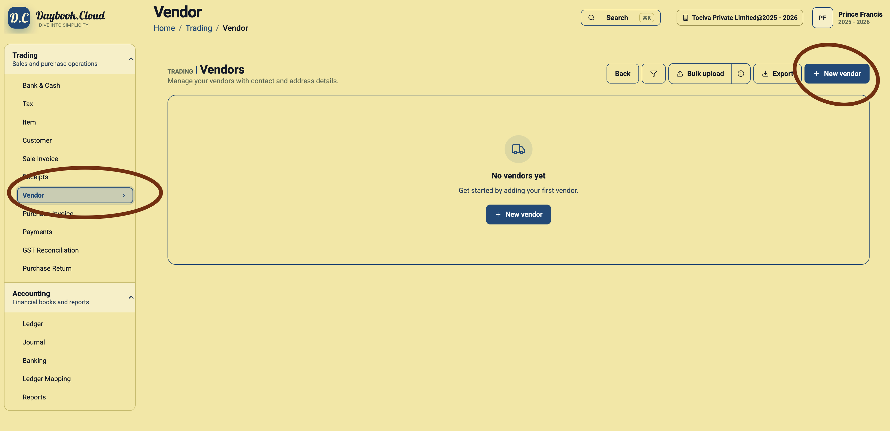
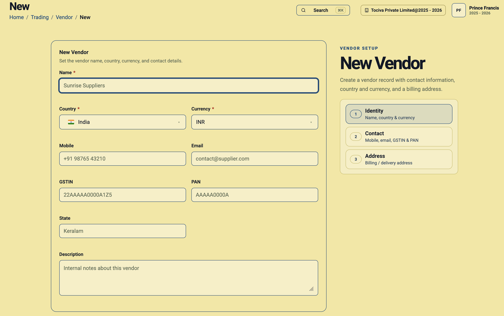
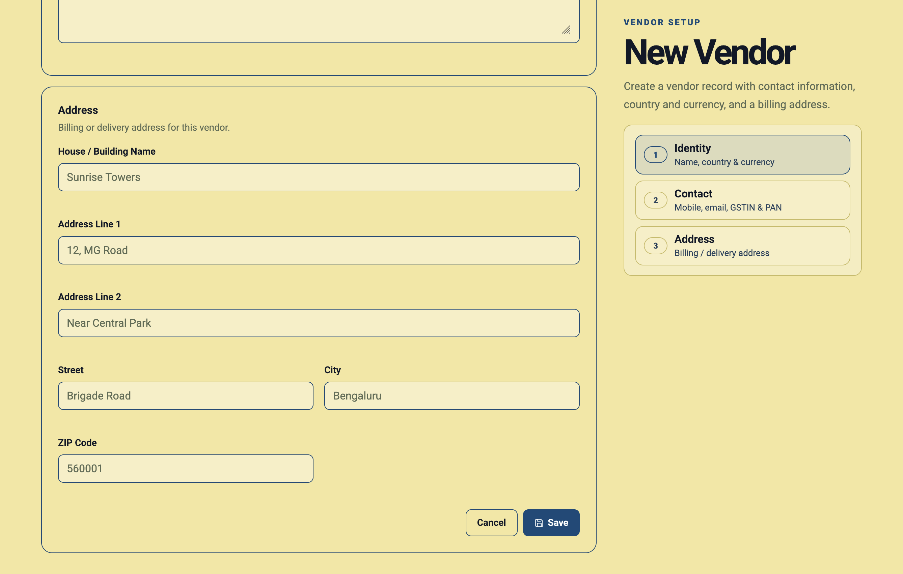

A vendor record stores the identity and billing details of a supplier from whom your business purchases products or services. Creating vendors before recording purchases helps your team use consistent names, tax details, currency, and addresses.
Daybook.Cloud supports both local and international vendors. Each vendor can have its own country and currency, so the vendor record reflects how you transact with that supplier.
Before you start
Keep these vendor details ready:
- Name: The vendor’s legal or commonly recognised business name.
- Country: The country where the vendor is located.
- Currency: The currency used for transactions with the vendor.
- Contact details: Mobile number and email address.
- GSTIN: The vendor’s GST registration number when applicable.
- PAN: The vendor’s Permanent Account Number when applicable.
- State: The vendor’s state for relevant tax and address records.
- Address: The vendor’s billing or delivery address.
- Description: Optional internal notes about the vendor.
Step 1: Open the Vendors page
Go to Trading and select Vendor from the left menu. Click New vendor at the top right. If no vendors exist yet, you can also use the New vendor button in the centre of the page.

Step 2: Enter the vendor identity
Enter the vendor name, then select the vendor’s Country and Currency. These required fields establish where the vendor is located and the currency in which you normally transact with that supplier.

Example: Sunrise Suppliers
- Name: Sunrise Suppliers
- Country: India
- Currency: INR
- Mobile: The supplier’s primary contact number.
- Email: The address used for purchase and payment communication.
- GSTIN and PAN: Enter the identifiers provided by the vendor.
- State: Enter the vendor’s registered state.
Step 3: Choose the correct vendor currency
The vendor currency should match the currency agreed for purchases and payments. For example, use INR for a local supplier invoicing in Indian Rupees, USD for a supplier billing in US Dollars, or EUR for a supplier billing in Euros.
Verify the currency before saving because it provides important financial context for transactions associated with the vendor.
Step 4: Add contact information
Enter a current mobile number and email address. Reliable vendor contact details help your purchasing and finance teams resolve order, invoice, and payment questions without searching through separate records.
Step 5: Enter GSTIN, PAN, and state
For Indian vendors, enter the GSTIN, PAN, and state when applicable. Check these values against the vendor’s official documents. Incorrect tax identifiers can create avoidable problems during purchase review and GST reconciliation.
For vendors outside India, complete only the tax fields relevant to your process and follow your accountant’s guidance.
Step 6: Add internal notes
Use the Description field for notes such as the vendor’s account manager, payment terms, product range, purchase contact, or other details your team should know.
Step 7: Enter the billing or delivery address
Complete the address using the house or building name, address lines, street, city, and ZIP or postal code. Use the address supplied by the vendor for billing or delivery records.

Step 8: Review and save the vendor
Check the vendor name, country, currency, tax identifiers, contact details, and address. Click Save when the record is complete. The vendor will then be available for supported purchase and payment workflows.
Vendor setup checklist
- Check for an existing vendor before creating a duplicate.
- Use the vendor’s recognised business name.
- Select the correct country and transaction currency.
- Verify GSTIN and PAN against official vendor records.
- Enter a current mobile number and email address.
- Add the complete billing or delivery address.
- Review all details before saving.